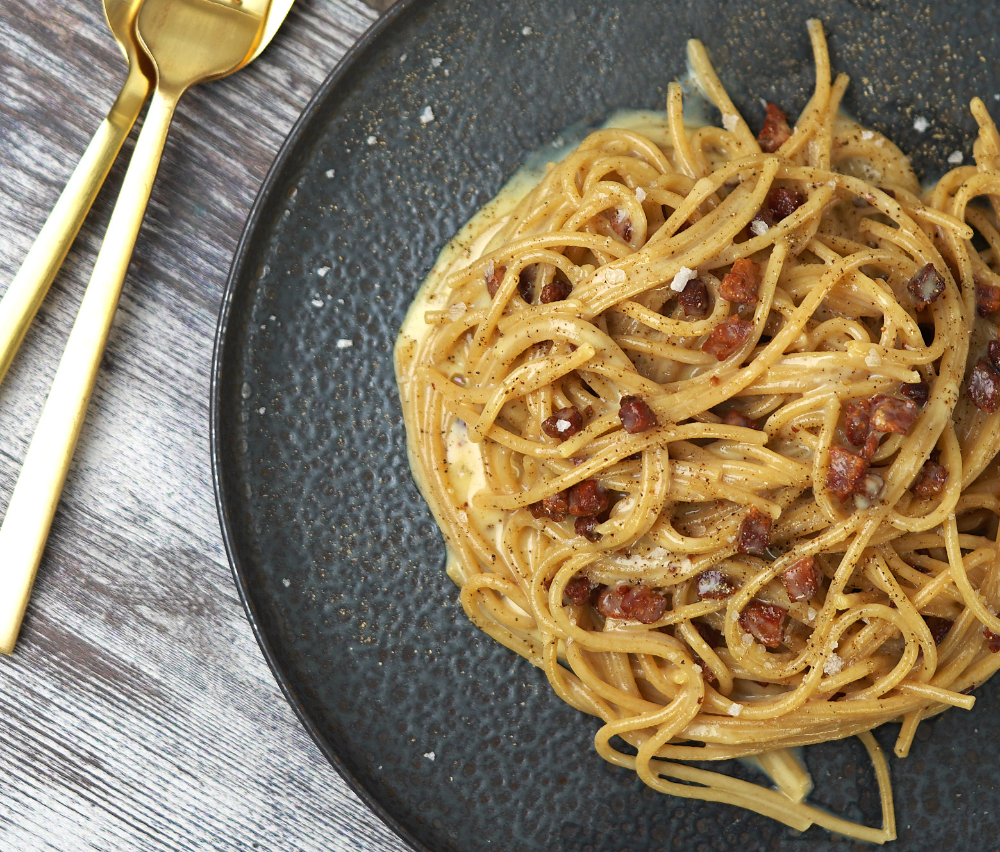

Spaghetti Carbonara

Description
Carbonara is a roman classic. In this recipe we follow the
correct way of doing it, which means we are going
to use minimal ingredients (no cream!).
Size: 4 serving
Ingredients:
- 1 x tbsp extra virgin olive oil
- 50g butter
- 200g Guanciale (pork cheeck)
- 4 x large egg yolk
- 75g grated pecorino
- 400g high quality spaghetti
Method
- Heat the olive oil and butter in the pan, add Guanciale.
Cook on medium until crispy.
- In a small bowl beat egg yolk and pecorino
-
Add (cooked) spaghetti
to the pan with Guanciale and stir it nicely.
-
Remove pan from the heat and stir in the egg yolk mixture. Add
more paste water if necessary.